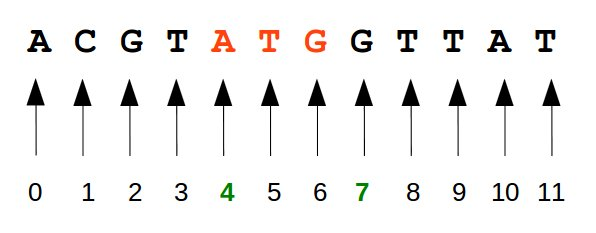
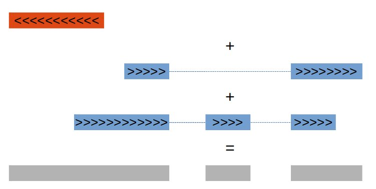

Working with genomic data frequently implies to deal with
biological sequences. As these sequences (genes, exons, ...) are
related to genomes, handling genomic coordinates is
typically required. A basic task in genomic data analysis is
to compare different sets of genomic features
(transcripts, promoter regions, polymorphisms, conserved
elements,...). One question could be for instance "which SNPs
(Single Nucleotide Polymorphisms) are associated with a disease
of interest and fall into exonic regions". Such questions
require dedicated tools to ease data analysis.
The Bed file format is a very simple way to store information
related to genomic features. A typical file in BED format will
contain the following columns (the 3 first columns are
mandatory):
Several conventions exist to describe genome
coordinates. The BED file format is said to be "zero-based,
half-open".

The script will automaticaly
- Use wget
to retrieve the source code of
the BedTools program.
- Uncompress the zip file
(unzip). This will create a
folder named bedtools2-master.
- Run the command mkdir to create
a new folder in your home directory
(~/soft), where the BedTools
software will be stored (and which may be used later to store
other software tools).
- Move (mv) the
directory bedtools2-master to the
directory ~/soft.
- Change the shell working directory
to ~/soft/bedtools2-master
(cd).
- Compile Bedtools from sources (make).
- Add a line to your ~/.bashrc file
so that the folder ~/soft/bedtools2-master/bin will be
added to the PATH variable (PATH is an environment
variable specifying a set of directories where executable
programs are located).
The installation script can be
downloaded here
(right-click on the link and select "Copy link adress" to get
the URL.).
- Go to the /tmp directory (cd).
- Using the wget command, download the installation script.
- Use the ls command with -l arguments to check that the file is present. Have a look at access permissions.
- check the content of installBedtools.sh script with less.
- Use the chmod command to give yourself (the User) eXecute permission on file installBedtools.sh.
- Using the ls command with -l arguments check access permissions.
- Execute the installBedtools.sh script.
- Instruct the terminal to reload the ~/.bashrc file (source)
- Go back to the ~/TD02_Bioinfo directory (cd).
- Type bedtools -h
View solution|
Hide solution
Solution
# We will store the install script in the Linux temporary directory /tmp
#
# BEWARE: the Linux system deletes the files in this directory when
# they are not required anymore.
cd /tmp
# Download the script
wget http://pedagogix-tagc.univ-mrs.fr/courses/jgb53d-bd-prog/installBedtools.sh
# List the files in the tmp directory by chronologic order, and
# check the status of the script file installBedtools.sh
ls -l
# Inspect the file content
less installBedtools.sh
## Tip: after having looked at the content, type "q" to quit the programm "less"
# Change permissions of the script, to make it executable
chmod u+x installBedtools.sh
# The script has now read (r), write (w) and execute (x) rights
ls -l
# Execute the script
./installBedtools.sh
# Check the installation
cd ~ # Go back to your home directory
ls -l # There should be a new directory named "soft"
ls -l soft # this "soft" directory contains a sub-directory "bedtools2-master"
# reload your ~/.bashrc file to include the bedtools binary directory in your path
source ~/.bashrc
cd ~/TD02_Bioinfo directory # go back to previous directory
bedtools -h # check that installation was effective
Which fraction of the human genome is covered by exons ?
In the section below we will try to answer the following
question: "Which fraction of the genome is covered by exons ?".
Downloading genomic coordinates of exons.
First, we will retrieve feature coordinates (exons) from the UCSC server.
- Using your Web browser, go to
the UCSC web site.
- Select Tables in the top menu.
- Select the following parameters:
- Clade: Mammal,
- Genome: Human,
- assembly: "Dec. 2013 (hg38, GRCh38)",
- group: Genes and Gene Prediction tracks,
- track: RefSeq Genes,
- table: refGenes,
- region: genome,
- Output format: BED.
- Set output file to "RefGene_hg38_exons.bed" and click on Get output.
- In the next window, select Exons (plus 0
bases at each end). Leave all other options
unchanged, click the button get
BED.
Note that with the same protocol we could
also select the coordinates of all transcripts or
intronic regions).
- Use the mv command to
move the file RefGene_hg38_exons.bed from
~/Téléchargements
(or ~/Downloads) to the your
result
directory TD02_Bioinfo.
- Look at the 6 first lines of the file. Does it look
like a bed format ?
- Is it a tabulated file ?
View solution|
Hide solution
Solution
## Note: the download folder may vary depending on your operating system.
## We indicate here the download fodler for the French version of Firefox.
ls ~/Téléchargements
# mv RefGene_hg38_exons.bed to the result directory
mv ~/Téléchargements/RefGene_hg38_exons.bed ~/TD02_Bioinfo
cd ~/TD02_Bioinfo # Set the working directory to the result firectory for this practical
ls -l # Check that the exon table has been moved here
head -n 6 RefGene_hg38_exons.bed # Look at the first 6 lines
# Select the first line and convert each letter to a code, to show
# that the file is tabulated (contains "\t" characters)
head -1 RefGene_hg38_exons.bed | od -c
Merging overlapping regions
To answer our simple question, we must first keep in mind that
several exons may overlap, due to various phenomena (alternative
splicing, multiple promoters or terminators, mutually
overlapping genes). To avoid counting several times the same
region, our first task will thus be to merge these overlapping
regions. The mergeBed command from
the Bedtools suite combines
overlapping features in an interval file into a single feature
which spans all of the combined features. The image below
illustrate this.
Beware: MergeBed requires the genomic
coordinates to be sorted (see below).

We will first discard genes located on "non-regular"
chromosomes. For this, we consider as "regular" the chromosome
names starging with "chr" followed by one or more numbers (chr1,
chr17,...) or the specific letters "X" or "Y" (chrX, chrY). We
will first select the features from the bed files that match
these regular names, and then count among them (i) the total
number of exons and (ii) the number of exons per chromosome.
grep -P "^chr[0-9XY]+\t" RefGene_hg38_exons.bed > RefGene_hg38_exons_reg.bed # delete non 'regular' chromosomes.
wc -l RefGene_hg38_exons_reg.bed # Total number of exons
cut -f1 RefGene_hg38_exons_reg.bed | sort | uniq -c | sort -rn # Check the number of exon per chromosome
- Get some help about the sortBed command using the -h (help) argument.
- Use the sortBed command to sort exons by coordinates and store the results in RefGene_hg38_exons_reg_sort.bed.
- Get some help about the mergeBed command using the -h (help) argument.
- Use mergeBed with RefGene_hg38_exons_reg_sort.bed as input to combine overlapping exons into single features and store the results into a file named mergedExons.bed.
- Have a look at the first lines with the head command.
- Count the number of lines in all *.bed files using wc.. Is the result as expected?
- The length of one genomic feature can simply be obtained by computing column_3-column_2. Use a awk command to compute the sum of the length of all features.
- Compute the total length of the genome using the file ~/TD01_Bioinfo/hg38_transcripts/chromInfo.txt (see TD01). As an alternative, download the file here using wget.
- Now, what is the fraction of the genome that is covered by exons or genes ?
View solution|
Hide solution
Solution
sortBed -h # Get some help
sortBed -i RefGene_hg38_exons_reg.bed > RefGene_hg38_exons_reg_sort.bed # sort the file by Genomic coordinates
mergeBed -h # Get some help
mergeBed -i RefGene_hg38_exons_reg_sort.bed > mergedExons.bed # merge Features
wc -l *bed # number of line in mergedExons.bed is lower than in RefGene_hg38_exons_reg_sort.bed
awk 'BEGIN{FS="\t"; s=0}{s+=$3-$2}END{print s}' RefGene_hg38_exons_reg.bed # compute the total nucleotide coverage
awk 'BEGIN{FS="\t"; s=0}{s=s+$2}END{print s}' ~/TD01_Bioinfo/hg38_transcripts/chromInfo.txt # the total length of the genome
Genomic locations of SNPs associated with prostate cancer
Genome-Wide Association Studies (GWAS) are used in epidemiology to search for common genetics variants associated with a given disease. GWAS typically focus on associations between single-nucleotide polymorphisms (SNPs) and traits like diseases. Prostate cancer (PrCa) is the most frequently diagnosed cancer in males in developed countries. To identify common PrCa susceptibility alleles, Eeles RA et al, conducted a GWAS whose results are available through GWAS Central (study HGVST512). The top 50 associations (dataset: HGVRS986) were retrieved from GWAS Central and converted to a BED format (build hg38).
Which of these SNPs fall into exonic regions ?
The intersectBed program can be used to answer such questions (click for more informations).
- Get some help about the intersectBed program (argument-h).
- Download SNPs list in BED format here.
- Use the intersectBed command with -a, -b, -wa and -wb arguments to find SNPs falling into exonic regions.
View solution|
Hide solution
Solution
wget http://pedagogix-tagc.univ-mrs.fr/courses/jgb53d-bd-prog/data/SNPs_HGVM1446539_50_top_hg38.bed.gz
gunzip SNPs_HGVM1446539_50_top_hg38.bed.gz
intersectBed -wa -wb -a SNPs_HGVM1446539_50_top_hg38.bed -b RefGene_hg38_exons_reg.bed
Which of these SNPs fall into intronic regions ?
- Download intronic regions as bed format here.
- Use the intersectBed command with -a, -b, -wa and -wb arguments to find SNPs falling into intronic regions.
View solution|
Hide solution
Solution
wget http://pedagogix-tagc.univ-mrs.fr/courses/jgb53d-bd-prog/data/RefGene_hg38_introns_reg.bed.gz
gunzip RefGene_hg38_introns_reg.bed.gz
intersectBed -wa -wb -a SNPs_HGVM1446539_50_top_hg38.bed -b RefGene_hg38_introns_reg.bed
Which of these SNPs fall into promoter regions ?
As you can see, lots of these SNPs are located in intergenic regions (i.e. outside known genes). One additional question could be whether some of them are falling into promoter regions. As the promoter regions is difficult to define without additional informations (e.g. epigenetic marks) we will define it, here as the regions ransging from the the transcriptional start site (TSS) to -500bp upstream of the TSS. To answer this question, we need to extract those regions.
- Download the coordinates of the whole transcripts here (note that you can get it also from the table browser).
- Use the following awk onliner to extract promoter region coordiantes:
wget http://pedagogix-tagc.univ-mrs.fr/courses/jgb53d-bd-prog/data/RefGene_hg38_wg_reg.bed.gz
gunzip RefGene_hg38_wg_reg.bed.gz
cut -f6 RefGene_hg38_wg_reg.bed | sort | uniq -c # ensure that all transcript strands are defined
awk 'BEGIN{FS=OFS="\t"}{if($5=="+"){print $1,$2-500,$2,$4,$5,$6}else{print $1,$3,$3+500,$4,$5,$6}}' RefGene_hg38_wg_reg.bed > RefGene_hg38_prom_reg.bed # get the promoter regions.
One of the remaining problem is that or promoter regions from transcript t may overlap with exonic regions from another transcript. We can not strictly declare them as regulatory regions. We thus can discard these overlapping regions. This can be done with the subtractBed (click for more informations) command from the Bedtools suite.
- Use the subtractBed to delete any promoter region overlapping exons (create a file named RefGene_hg38_prom_reg_noExons.bed).
- To ensure that this step was effective go to UCSC.
- From the top Menu select Genomes
- Select group: Mammal, genome: Human, assembly: "Dec. 2013 (hg38, GRCh38)".
- Click on manage custom tracks > add custom track > Choose File (browse to RefGene_hg38_prom_reg_noExons.bed) and click Submit.
- click on go to genome browser. Enter position chr1:201504430-201512040 (for instance) to check the result.
- Use intersectBed to find SNPs overlapping promoter regions.
- Get information relative to NM_138634 and its associated gene here. Is there any link with PrCa?
View solution|
Hide solution
Solution
subtractBed -a RefGene_hg38_prom_reg.bed -b mergedExons.bed > RefGene_hg38_prom_reg_noExons.bed
intersectBed -wa -wb -a SNPs_HGVM1446539_50_top_hg38.bed -b RefGene_hg38_prom_reg_noExons.bed